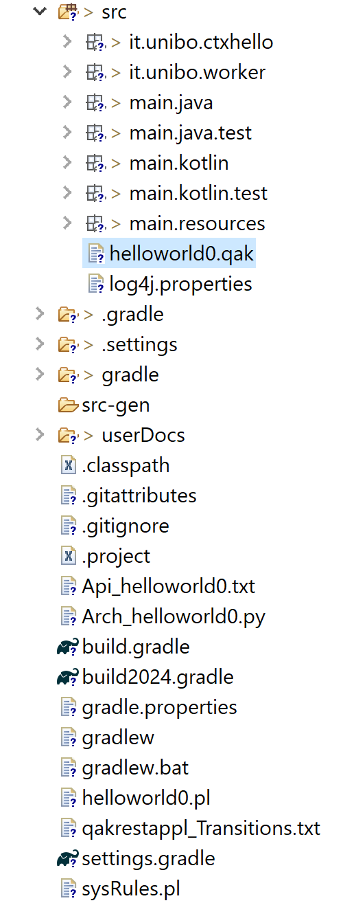
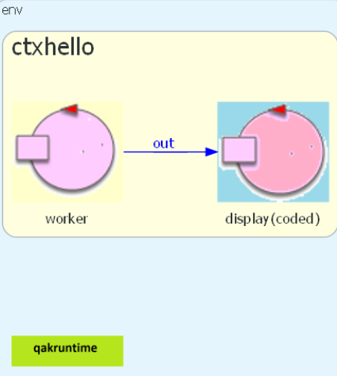
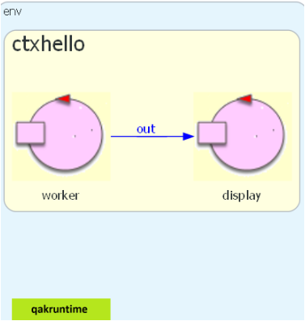
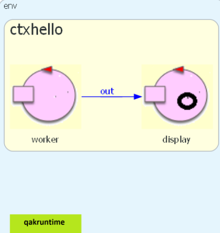
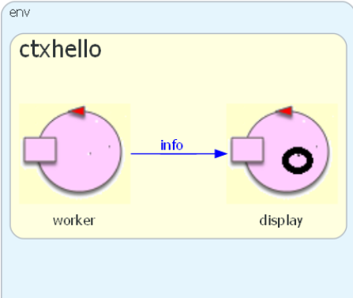

QakActorsIntro24¶
Creazione di un nuovo progetto¶
1) Creazione del progetto con git
|

|
2) Definizione del modello helloworld0.qak
|
 |
3) Creazione della immagine* helloworld0.qak
|
Immagine helloworld0arch.png della architettura del sistema |
{kind=link}
{kind=link}
helloworld0¶
Definiamo il modello di un sistema composto da un solo componente (actor) che opera in modo autonomo scrivendo Hello world sul dispositivo standard di output. Ricodiamo che:
Descrizione di un sistema che pone in primo piano (foreground) aspetti ritenuti rilevanti lasciando sullo sfondo (background) aspetti ritenuti trascurabili (anche se essenziali per il funzionamento).
Ovviamente la definizione di un insieme di aspetti ritenuti essenziali dipende dal punto di vista.
Per questo un sistema può essere associato a più di un modello.
helloworld0.qak
|
System helloworld0
/*1*/Context ctxhello ip [host="localhost" port=8000]
/*2*/QActor worker context ctxhello{
/*3*/State s0 initial{
println("Hello world") color magenta
}
}
|
Questo primo esempio mostra come si possa scrivere il comportamento di un attore qak usando anche solo codice kotlin all’interno di un unico stato
Come detto in Quadro generale, questo modo di procedere non frutta le capacità espressive sintetiche del Linguaggio qak.
helloworld1¶
Definiamo il modello di un sistema composto da un solo componente (actor) che opera come helloworld0 scrivendo anche su un dispostivo custom introdotto dall’application designer come POJO-JFX.
Il dispositivo custom:
è definito in Kotlin nella directory utils entro main.resources.
si basa su librerie JFX, di cui si tiene già conto nel file build2024.gradle generato dalla Qak software factory.
Perchè il display¶
Al momento, i dettagli costruttivi del dispositivo (descritti più avanti, nella sezione DisplayObj) possono essere ignorati; basta sapere che questo dispositivo è implementato in Java o in Kotlin e che:
espone un
createche costruisce un oggetto (si veda Design patterns)implementa il metodo:
public void write( String s ) //In kotlin: fun write(s: String?)
opera in modo che la .
In questa fase, il DisplayObj ci serve per enfatizzare la differenza tra i concetti di actor e object e per fare esempi sulle loro possibili relazioni.
helloworld1.qak
|
System helloworld1
Context ctxhello
ip [host="localhost" port=8001]
QActor worker context ctxhello{
[#
/*1*/ val d = utils.DisplayObj.create()
#]
State s0 initial{
println("Hello world") color magenta
[#
/*2*/ d.write("Hello world again!")
#]
}
}
|
{kind=link}
Questo esempio mostra come si possano (ri)usare all’interno di un attore qak oggetti convenzionali costruiti grazia ad opportune librerie.
helloworld2¶
Introduciamo nel sistema un CodedQActor che incapsula il Display e che gestisce un dispatch della forma:
Dispatch out:out(S)
interpretandolo come comando per scrivere sul Display.
helloworld2.qak
|
System helloworld2
/*1*/Dispatch out : out(TERM)
Context ctxhello
ip [host="localhost" port=8002]
/*2*/CodedQActor display context ctxhello
/*3*/ className "DisplayCodedQak"
QActor worker context ctxhello{
State s0 initial{
/*4*/ delay 1500
println("Hello world") color magenta
/*5*/forward display -m out:out(hello_again)
[# val OutMsg = "hello hello again" #]
/*6*/forward display -m out:out($OutMsg)
}
}
|
Immagine generata La Qak software factory genera codice Python che costruisce in modo automatico una immagine grafica dell’architettura del sistema. |
 |
{kind=link}
{kind=link}
DisplayCodedQak.kt¶
Il CodedQActor display istanza di questa classe, specializza la classe it.unibo.kactor.ActorBasic.kt,
che agisce in modo message driven,
cioè elabora in modo FIFO i messaggi che la Qak infrastructure inserisce sulla sua coda di input.
DisplayCodedQak.kt (in resources)
|
import it.unibo.kactor.ActorBasic
import unibo.basicomm23.interfaces.IApplMessage
import unibo.basicomm23.utils.CommUtils
import kotlinx.coroutines.runBlocking
import kotlinx.coroutines.GlobalScope
import kotlinx.coroutines.CoroutineScope
class DisplayCodedQak( name:String ):
/*1*/ ActorBasic( name ){
/*2*/val display = utils.DisplayObj.create()
/*3*/override suspend fun actorBody(msg:IApplMessage){
if(msg.msgId()=="out")
display.write(msg.msgContent())
}
}
|
Questo esempio mostra:
come definire ed usare un attore scritto in kotlin a partire dalle classi definite nella Qak infrastructure
come un attore possa tradurre messaggi (di comando) in chiamate a metodi di oggetti convenzionali
helloworld3¶
Facciamo ‘emergere’ il comportamento del Display a livello di modello, rendendo esplicita
la gestione del Dispatch out:out(TERM) che prima risultava sommersa in
DisplayCodedQak.kt.
Immagine generata L’immagine grafica dell’architettura del sistema ottenuta dal modello è ora quella di figura. Si noti il cambio della icona rispetto al caso helloworld2 |
 |
{kind=link}
helloworld3.qak: display
|
System helloworld3
Dispatch out : out(TERM)
Context ctxhello ip [host="localhost" port=8003]
QActor display context ctxhello{
[#
/*1*/val d = utils.DisplayObj.create()
#]
State s0 initial{
}
/*2*/Transition t0 whenMsg out -> handleout
State handleout{
/*3*/onMsg( out:out(TERM)){
[#
/*4*/ val OutMsg = payloadArg(0) #]
/*5*/ d.write("$OutMsg")
#]
}
}
}
|
helloworld3.qak: worker
|
QActor worker context ctxhello{
State s0 initial{
/*1*/delay 1500
/*2*/println("Hello world") color magenta
/*3*/forward display -m out:out(hello_again)
}
}
|
Questo esempio mostra come un attore qak espresso in Linguaggio qak possa rendere esplicito un comportamento in precedenza realizzato da una parte ‘sommersa’ del sistema.
helloworld3 withobj¶
In molte situazioni può essere conveniente , in modo che non sia più necessario scrivere codice Kotlin e che la presenza di un oggetto incapsulato risulti visibile nella icona dell’actor.
Questo obiettivo viene raggiunto usando la clausola Immagine generata L’immagine grafica dell’architettura del sistema ottenuta dal modello è ora quella di figura. |
 |
{kind=link}
helloworld3.qak withobj
|
System helloworld3
Dispatch out : out(TERM)
Context ctxhello ip [host="localhost" port=8003]
/*1*/QActor display context ctxhello
/*2*/ withobj d using "utils.DisplayObj.create()"{
/*3*///[# val d = utils.DisplayObj.create() #]
State s0 initial{
...
}
}
|
Questo esempio mostra l’idea che gli attori possano incapsulare oggetti convenzionali possa semplificare il codice (la creazione degli oggetti) ed evidenziare l’incapsulamento nella immagine della architettura.
helloworld4¶
Un QActor ha la proprietà di essere observable da un altro actor o da un componente esterno al sistema ().
In questa versione del sistema,
l’attore display opera come observer dell’actor worker e visualizza sul Display embedded
gli aggiornamenti che worker invia tramite un dispatch che l’observer dichiara di voler
gestire col nome info.
helloworld4.qak: display come osbserver
|
System helloworld4
Dispatch info : info(SOURCE,TERM)
Context ctxhello ip [host="localhost" port=8004]
QActor display context ctxhello
withobj d using "utils.DisplayObj.create()"{
State s0 initial{
/*1*/observeResource worker msgid info
}
Transition t0 whenMsg info -> handleinfo
State handleinfo{
printCurrentMessage
println("$currentMsg") color blue
/*2*/[#
d.print( currentMsg.toString() )
d.print( "$currentMsg" )
d.print( currentMsg.msgContent().toString() )
d.print( "${currentMsg.msgContent()}" )
#]
/*3*/onMsg( info:info(SOURCE,TERM)){
[# val Source = payloadArg(0)
val infoMsg = payloadArg(1)
val M = "$infoMsg from $Source"
#]
[# d.write( M ) #]
}
}
Transition t0 whenMsg info -> handleinfo
}
|
helloworld4.qak: worker come observable
|
QActor worker context ctxhello{
State s0 initial{
[# var n = 0 #]
/*1*/delay 1500
/*2*/updateResource [# "info($name,hello_${n++})" #]
delay 2000
/*3*/updateResource [# "m($name,hello_${n++})" #]
}
}
|
Immagine generata L’immagine grafica dell’architettura del sistema ottenuta dal modello è ora quella di figura.
|
 |
{kind=link}
DisplayObj¶
Il dispositivo custom è definito in Kotlin nella directory utils entro main.resources.
Parte statica della classe
|
package utils
import javafx.application.Application
import javafx.event.ActionEvent
import javafx.event.EventHandler
import javafx.stage.Stage
import javafx.scene.layout.GridPane
import javafx.scene.Scene
import javafx.scene.control.Button
import javafx.scene.control.TextArea
import javafx.scene.text.Text
import unibo.basicomm23.utils.CommUtils
class DisplayObj : Application() {
protected var stage: Stage? = null
companion object {
/*1*/ protected var launched = false
protected var outarea: TextArea? = null
protected var outtext: Text? = null
protected var myButton: Button? = null
protected var created = false
protected var display: DisplayObj? = null
/*2*/public fun create() : DisplayObj{
if( ! created ) {
val d = DisplayObj()
display = d
created = true;
/*3*/ kotlin.concurrent.thread(start = true) {
d.initialize( )
}
}else CommUtils.outred(
"WARNING: display already created")
return display!!
}
}
...
}
|
Inizializzazione del device JFX
|
/*1*/fun initialize() {
if (!launched) {
launch(*arrayOf())
launched = true
}
}
/*2*/ override fun start(primaryStage: Stage) {
stage = primaryStage
setOutArea()
createScene(stage)
}
/*3*/override fun stop() {
System.exit(0)
}
|
Creazione della scena
|
/*1*/protected fun setOutArea() {
outarea = TextArea()
outarea!!.prefColumnCount = 15
outarea!!.prefHeight = 280.0
outarea!!.prefWidth = 600.0
outarea!!.setWrapText(true)
myButton = Button("Clear")
myButton!!.onAction=EventHandler {
_: ActionEvent? -> outarea!!.text=""
}
}
/*2*/protected fun createScene(stage: Stage?) {
val root = GridPane()
root.add(outarea, 0, 0)
root.add(myButton, 0, 1)
val scene = Scene(root, 600.0, 300.0)
stage!!.title = "actorgui"
stage.scene = scene
stage.show()
stage.isAlwaysOnTop = true
}
|
Metodo print¶
|
/*1*/fun print(s: String?) {
if (s == null) return //defensive
while (outarea == null){ //defensive
Thread.sleep(500L)
CommUtils.outred("WARNING: display non yet started")
}
outarea!!.appendText("""$s""".trimIndent())
outarea!!.appendText("\n")
}
|
Metodo write¶
write
|
/*2*/fun write(s: String?) {
if (s == null) return //defensive
while (outarea == null){ //defensive
Thread.sleep(500L)
}
var outs = s.replace("show(", "").replace("out(", "")
val i = outs.lastIndexOf(")")
if (i >= 0) outs = outs.substring(0, i)
outarea!!.appendText("""$outs""".trimIndent())
outarea!!.appendText("\n")
}
}
|